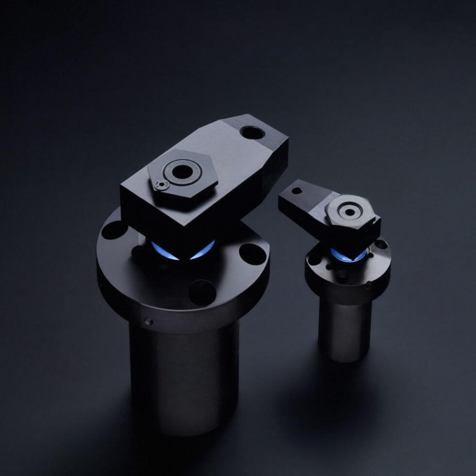
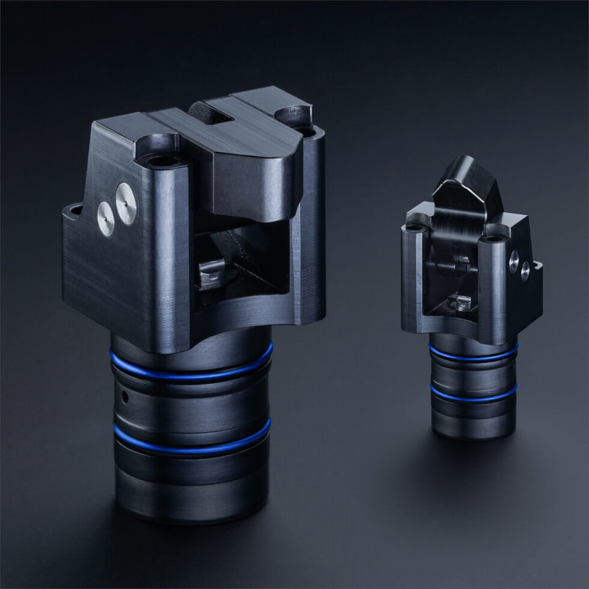
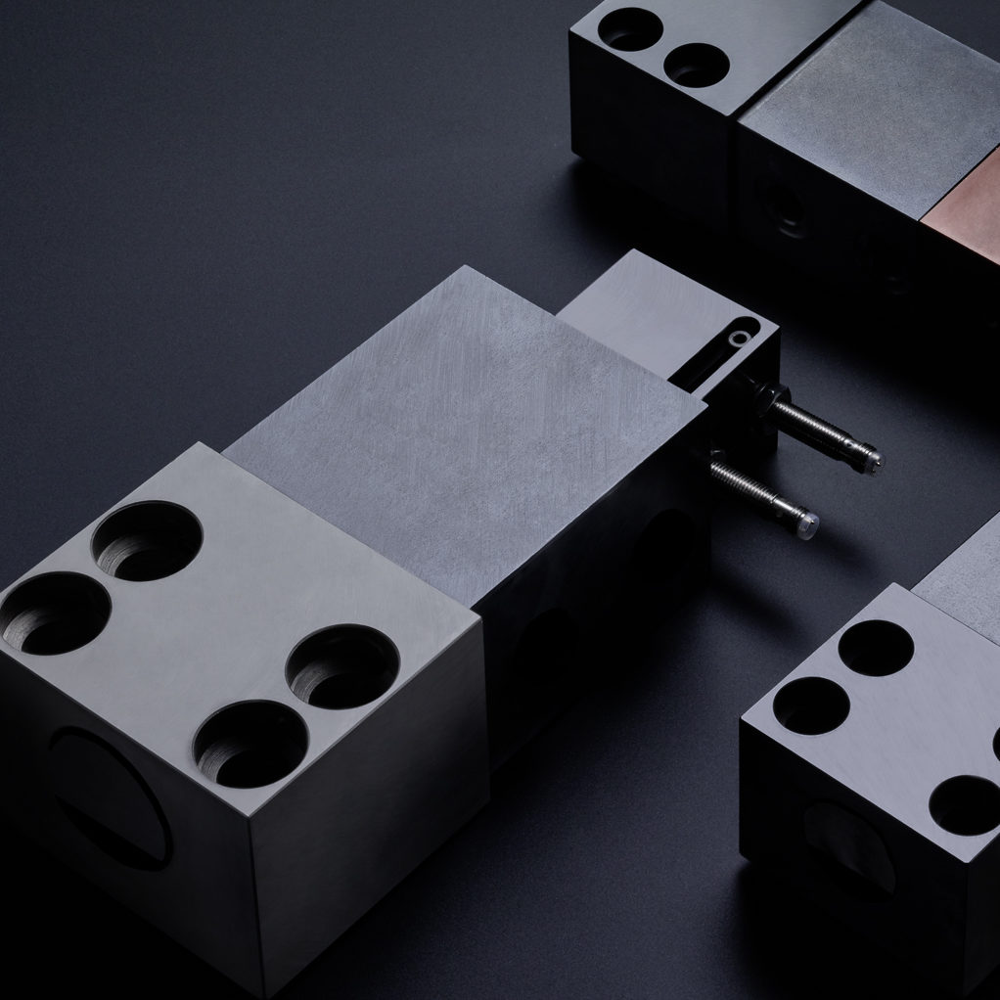
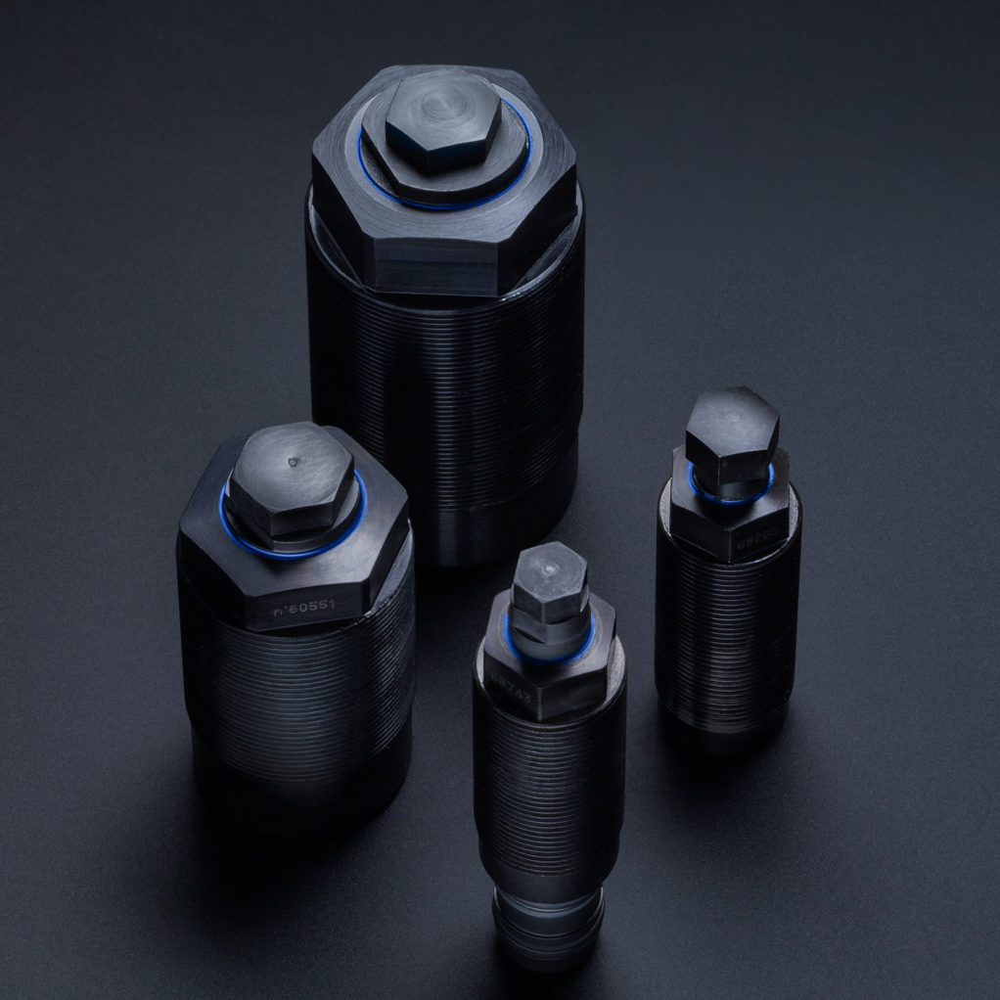
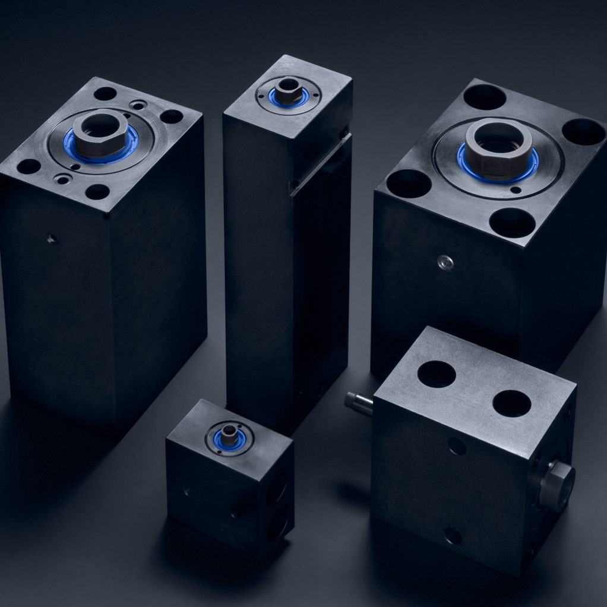
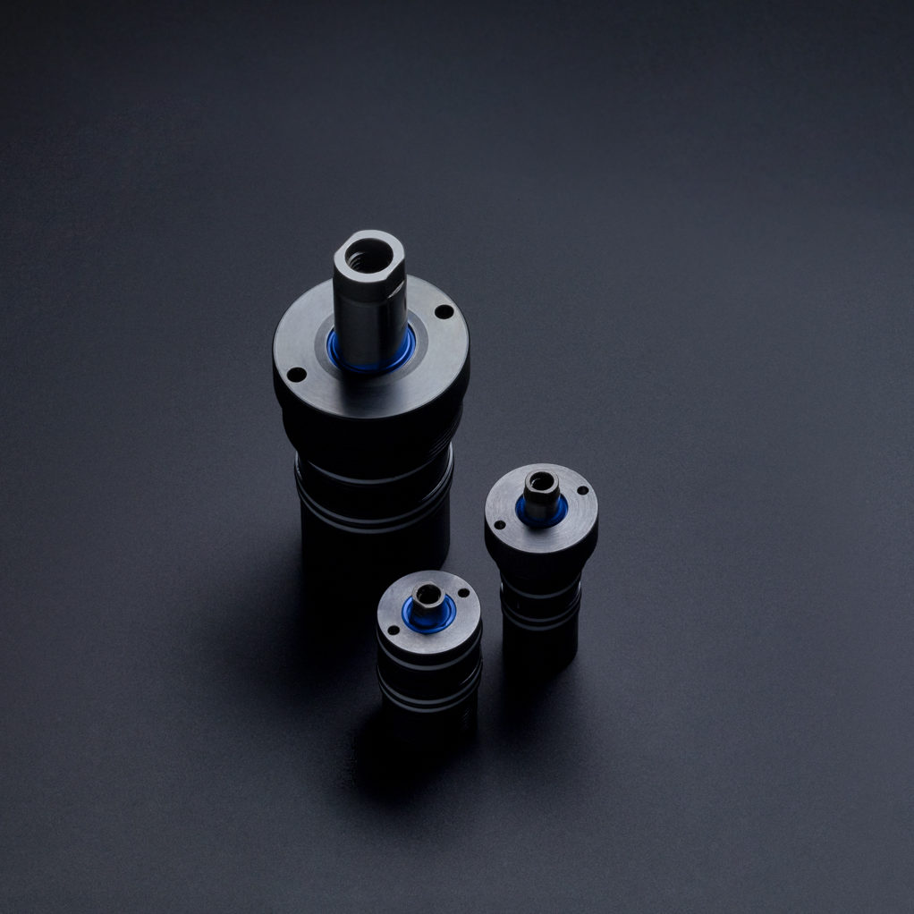
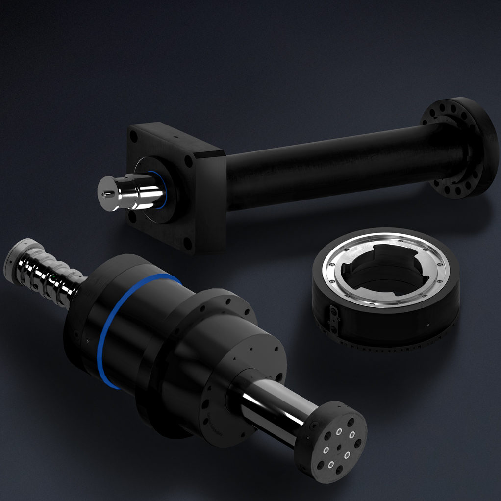

Schwenkspanner
Schwenkspanner von Micromat ohne Schwenkhub und mit Schwenkhub – jeweils in Varianten mit oder ohne Abfrage.
Spann- & Zylindertechnik · Rutesheim
Ihr Tor zu Effizienz und Präzision im Maschinenbau. Einfach und schnell.

Micromat – WIR GEBEN HALT!
Produkte
Mit und ohne Schwenkhub, mit und ohne Abfrage.

02Konfigurierbarer Spannarm.

03Für Druckguss- & Pressenwerkzeuge.

04Weniger Vibration, kein Durchbiegen.

05Stahl- & Aluminiumgehäuse.

06Hohlkolben-, Einspann-, Einschraubzylinder.

07Nicht im Standardprogramm? Unser Konstruktions-Team freut sich auf Ihre Anfrage.
Spanntechnik
Schwenkspanner von Micromat ohne Schwenkhub und mit Schwenkhub – jeweils in Varianten mit oder ohne Abfrage.
Hydraulische Hebelspanner von micromat werden eingesetzt, um Werkstücke querkraftfrei zu spannen. Es handelt sich um doppeltwirkende Elemente, die im Standard in allen Baugrößen mit einer pneumatischen Abfrage für die entspannt und gespannt Stellungen ausgestattet sind. Die Abfrage ist wartungsfrei und besteht aus einem integrierten Ventil, das bei einer Demontage des Spannarmes im Gehäuse integriert bleibt.
Die Besonderheit bei diesem Element ist der konfigurierbare Spannarm, der auf Ihre Bedürfnisse und Platzverhältnisse angepasst werden kann. Somit entfällt die teure Eigenfertigung. Wir liefern den konfigurierten Spannarm angepasst und montiert zu Ihrer Bestellung dazu.
Mit Keilspannelementen werden Werkzeuge mit schrägem Spannrand sicher gespannt. Die Elemente haben sich vor allem bei Werkzeugen für Druckgieß-Maschinen sowie anderen Pressenwerkzeugen bewährt.
Keilspannelemente bestehen aus einem doppeltwirkenden Blockzylinder, auf den ein Führungselement mit Spannbolzen angeflanscht wird. Der Spannbolzen und das zu spannende Werkzeug sind jeweils mit einer Schräge ausgeführt. Über diese Schräge spannt das Keilspannelement das Werkzeug.
Abstützelemente werden eingesetzt, wenn aufgrund geometrischer Bedingungen eines Werkstücks die Gefahr des Durchbiegens besteht oder zu starke Vibrationen auftreten können. In diesem Fall stützen Abstützelemente die Werkstücke ab und minimieren Vibration und Durchbiegung.
Druckschrauben · Spannarme · Sensorik
Zylindertechnik
Micromat Blockzylinder können aufgrund ihres großen Kraftbereiches bei kompakten Baumaßen und Dank kurzer und genauer Taktzeiten für viele Fertigungsaufgaben die ideale Lösung darstellen. Sie haben sich im Automotivbereich, Maschinenbau und Formenbau ebenso bewährt wie beispielsweise im Bereich Spritzgießen – mit Funktionen wie:
Rundzylinder können aufgrund ihrer platzsparenden Außenformen eng zueinander angeordnet werden und stellen für eine Vielzahl von Fertigungsaufgaben die ideale Lösung dar. Häufigen Einsatz finden sie in Mehrfachspannvorrichtungen im Automotivbereich sowie im Maschinenbau und Formenbau.
Lohnfertigung
Neben der Fertigung von Hydraulikzylindern und Spannelementen aller Art sowie Sonderlösungen bieten wir die Lohnfertigung von Einzel- und Serienteilen an. Wir beliefern aktuell in hohem Volumen namhafte deutsche Maschinenbauunternehmen und sind es daher gewohnt, komplexe Teile sowie hohe Genauigkeiten und sehr feine Oberflächengüten anzufertigen.
Unser aktuelles Teilespektrum erstreckt sich von der Bearbeitung von Montageplatten über die Anfertigung von Einzelteilen für Innenzahnradpumpen (Pumpengehäuse, Axialscheiben, Zwischengehäuse). Besonderes Know-how haben wir in der Fertigung von Ventilen im Bereich Hydraulik.
Bei der Ventilfertigung werden Gehäuse und Kolben von uns angefertigt und mit einem kleinen Spiel zwischen Gehäuse und Kolben von wenigen μ gepaart. Dabei sind für uns scharfkantige Steuerkanten an Gehäuse und Kolben selbstverständlich.
Bedarf an Lohnfertigungsteilen im Bereich Drehen, Fräsen, Honen, Schleifen oder Brünieren?
Wir bearbeiten in Rutesheim in Deutschland auf modernen CNC Maschinen von den Herstellern Heller, Index, DMG, Heckert, Stama, Spinner und Grob.
Unternehmen · Zertifizierung
Seit 2003 wurde unser Qualitätsmanagementsystem regelmäßig nach DIN EN ISO 9001:2015 zertifiziert. Das Zertifikat gilt für den Bereich mechanische Fertigung zur Herstellung von hydraulischen Steuerkomponenten und Spannzylindern.
Unseren Kunden garantiert das Zertifikat eine gute Produktqualität nach internationalen Qualitätsstandards.
Z-000186-DE-DE-A-000434-Micromat_Spannhydraulik_GmbHReferenzen
Kunden, mit denen wir lange und erfolgreich zusammenarbeiten.
Kontakt
Gerne helfen wir Ihnen weiter.